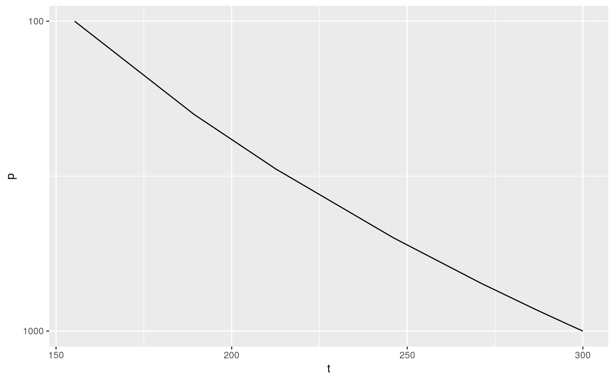

R/reverselog_trans.R
Reverse log transformation. Useful when plotting and one axis is in pressure levels.
reverselog_trans(base = 10)
| base | Base of the logarithm |
|---|
Other ggplot2 helpers: DivideTimeseries,
MakeBreaks, RepeatLon,
geom_arrow, geom_contour2,
geom_contour_fill,
geom_label_contour,
geom_relief, geom_vector,
guide_colourstrip,
scale_divergent,
scale_longitude, stat_na,
stat_subset
# Adiabatic temperature profile gamma <- 0.286 t <- data.frame(p = c(1000, 950, 850, 700, 500, 300, 200, 100)) t$t <- 300*(t$p/1000)^gamma library(ggplot2) ggplot(t, aes(p, t)) + geom_line() + coord_flip() + scale_x_continuous(trans = "reverselog")